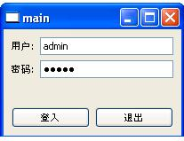
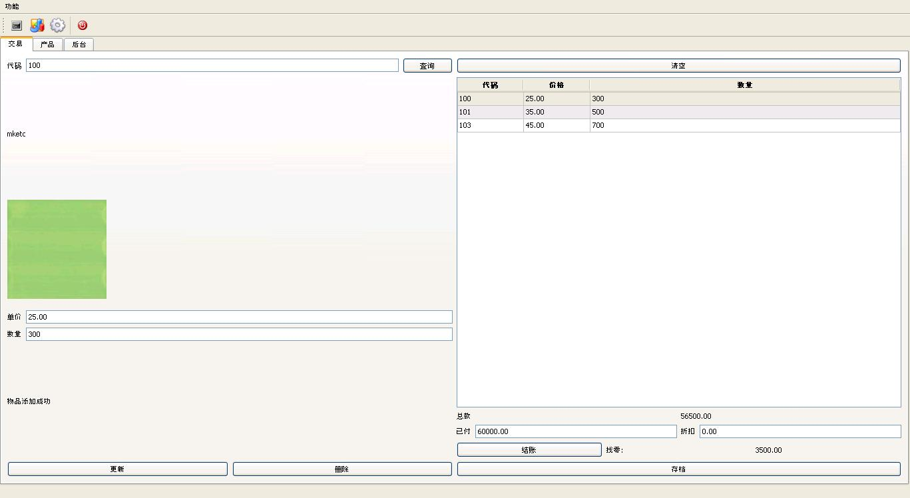
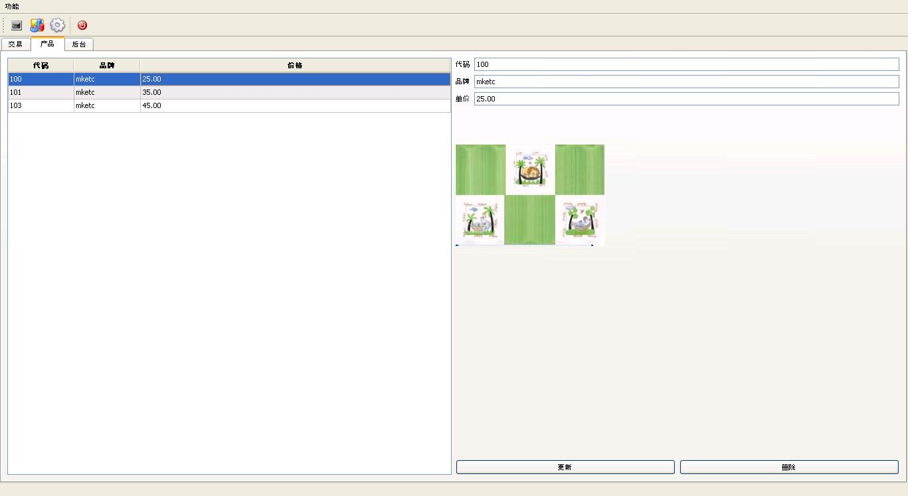
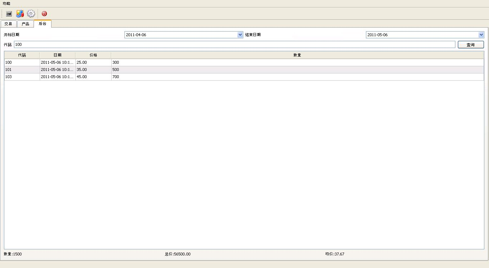

mktec
A ERP with win32 Native GUI
GUI
Screenshot
login

trade

product

admin

Function
- login
input user and password.
- trade
- search a product with code
- input the product count,
- checkout, the customer paid, and get the change
- archive the data to history
- product
- manage the product
- update the product image.
- admin
- search the transaction by code.
- summary the transaction in one week/month/year.